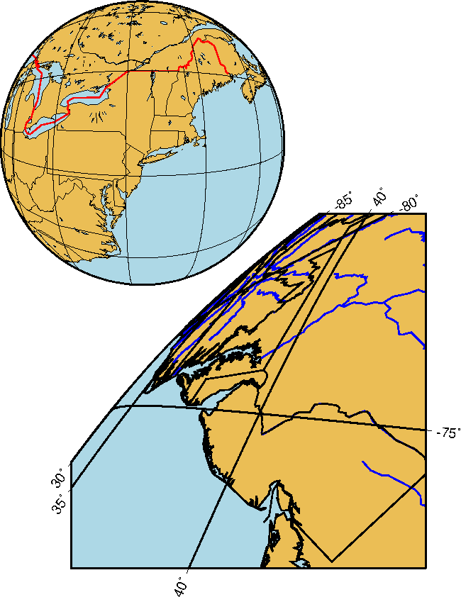

Example 26. GMT 4.2.0 introduced the full general vertical
perspective projection. At the moment it is only available
from pscoast and grdimage but it will eventually be implemented
throughout.
 View GMT script.
View GMT script.
 Download zipped PostScript file.
Download zipped PostScript file.
 Back
Back